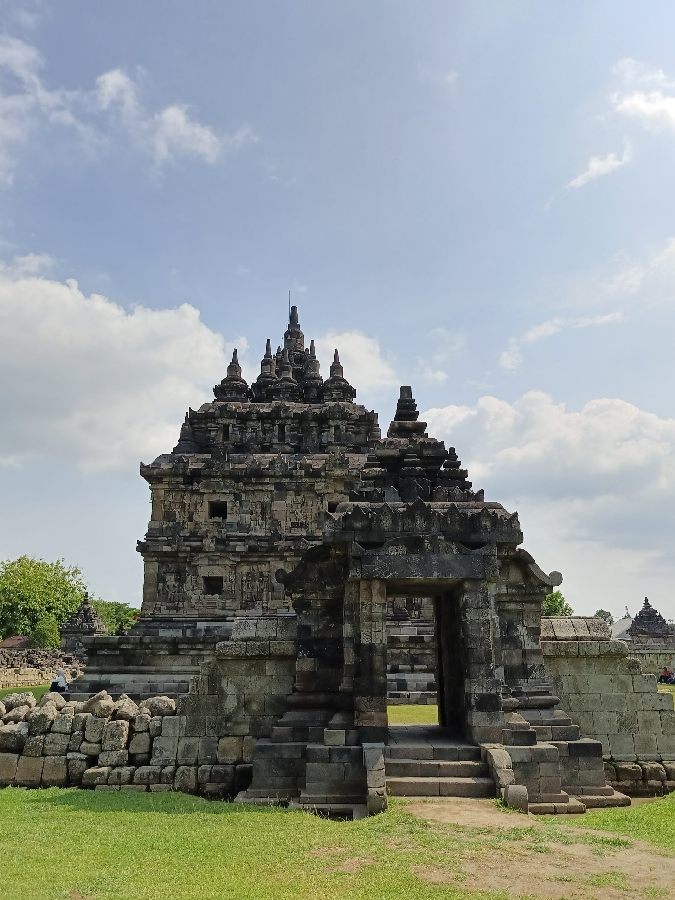
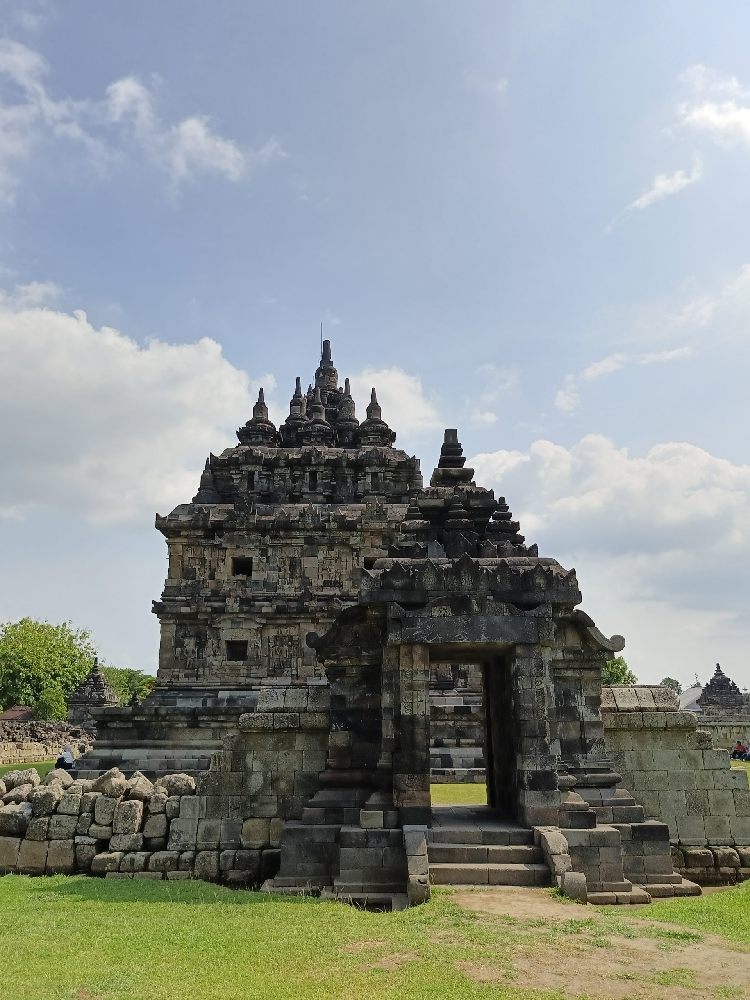

Sejarah Plaosan
Candi Plaosan dibangun pada masa Rakai Pikatan dari Kerajaan Mataram Kuno. Candi ini diperkirakan dibangun sekitar abad ke-9 M. Rakai Pikatan mendirikan Candi Plaosan untuk istrinya, Pramodhawardhani. Mereka adalah pasangan yang berbeda agama. Sang suami beragama Hindu, sementara sang istri menganut agama Buddha. Karena ini, hubungan mereka berdua tidak direstui oleh keluarga masing-masing. Namun, segala cara dilakukan untuk mendapatkan restu. Salah satunya adalah dengan membangun Candi Plaosan. Candi Plaosan sendiri merupakan candi bercorak Buddha dengan sentuhan arsitektur Hindu. Hal ini dilakukan demi membuktikan cinta Rakai Pikatan terhadap Pramodhawardhani. Akhirnya, kedua keluarga luluh dan merestui hubungan mereka. Seperti yang telah disebutkan sebelumnya, Candi Plaosan sering dijadikan sebagai tempat foto pre-wedding. Hal ini disebabkan menurut kepercayaan masyarakat bahwa setiap pasangan yang datang ke tempat ini bisa langgeng dalam hubungannya.
candi Buddha ini terbilang , karena arsitekturnya memiliki campuran dengan Candi Hindu. Hal ini berhubungan dengan kisah cinta Rakai Pikatan, yaitu Raja Mataram Kuno yang membangun Candi Plaosan. Baca juga: Siapakah Arsitek Candi Borobudur? Sejarah berdirinya Candi Plaosan Sejarah berdirinya Candi Plaosan dimulai saat Rakai Pikatan, yang berasal dari Dinasti Sanjaya (penganut Hindu), menikah dengan Pramodhawardhani, keturunan Dinasti Syailendra (penganut Buddha). Walaupun awal hubungan percintaan keduanya menimbulkan banyak keresahan dan penolakan karena perbedaan agama mereka, pernikahan berhasil dilangsungkan. Rakai Pikatan juga memberikan kebebasan kepada sang istri untuk menganut agama yang berbeda. Bahkan, sebagai lambang rasa cintanya kepada sang istri, Rakai Pikatan membangun Candi Plaosan. Para ahli memperkirakan bahwa Candi Plaosan berasal dari pemerintahan Rakai Pikatan di Kerajaan Mataram Kuno, atau sekitar abad ke-9. Hal ini diyakini J.G. De Casparis, seorang filolog asal Belanda, yang berpegang pada isi Prasasti Cri Kahulunan (842), yang menyebut bahwa Candi Plaosan Lor dibangun oleh Ratu Sri Sultan Kahulunan. Baca juga: Candi Banyunibo, Si Sebatang Kara Peninggalan Mataram Kuno De Casparis berpendapat bahwa Sri Kahulunan adalah gelar Pramodawardhani, putri Raja Samaratungga dari Dinasti Syailendra, yang menjadi permaisuri Rakai Pikatan. Sementara itu, sejarawan bernama Anggraeni, berpendapat bahwa candi ini dibangun sebelum masa pemerintahan Rakai Pikatan. Menurutnya, yang dimaksud dengan Sri Kahulunan adalah ibu Rankai Galung, yang memerintah Mataram Kuno sebelum Rakai Pikatan. Anggraeni juga menilai, masa pemerintahan Rakai Pikatan terlalu singkat untuk dapat membangun candi sebesar Candi Plaosan. Kemudian, pada Oktober 2003, ditemukan prasasti di Candi Plaosan Kidul, yang diperkirakan berasal dari abad ke-9. Prasasti yang terbuat dari lempengan emas berukuran 18,5 X 2,2 cm itu berisi tulisan dalam bahasa Sanskerta dan ditulis menggunakan huruf Jawa Kuno. Meski isi prasasti itu belum jelas diketahui, Tjahjono Prasodjo, arkeolog Universitas Gadjah Mada (UGM) yang diberi tugas membacanya, meyakini bahwa isinya menguatkan dugaan bahwa Candi Plaosan dibangun pada masa pemerintahan Rakai Pikatan. Baca juga: Perbedaan Candi Hindu dan Buddha Mitos Candi Plaosan Salah satu keistimewaan Candi Plaosan adalah bahwa pembangunannya dilatarbelakangi oleh kisah cinta Rakai Pikatan dan sang permaisuri, Pramodhawardani, yang berbeda agama. Candi Plaosan pun menjadi salah satu bukti nyata, bahwa kekuatan cinta dapat menjadi alat untuk menyatukan perbedaan, serta menjadi simbol toleransi umat beragama pada masa Kerajaan Mataram Kuno. Berdasarkan kisah asmara Rakai Pikatan dan Pramodhawardani, muncul mitos bahwa bagi pasangan yang mengunjungi Kompleks Candi Plaosan, niscaya hubungan mereka akan langgeng. Mitos ini berbanding terbalik dengan Candi Prambanan, yang menyatakan apabila pasangan mengunjungi Candi Prambanan, maka hubungan keduanya akan menjadi retak. Baca juga: Rakai Pikatan, Raja Mataram Kuno yang Membangun Candi Prambanan Perbedaan Candi Kembar Plaosan Kompleks Candi Plaosan dikelilingi oleh parit dan pagar berbentuk empat persegi panjang. Lihat Foto Kerap disebut sebagai candi kembar, kedua bangunannya memiliki kesamaan dalam segi pahatan dengan Candi Borobudur, Candi Sewu, dan Candi Sari. Meski sama-sama memiliki tinggi 21 meter dan bentuknya sekilas terlihat sama, Candi Plaosan Lor dan Candi Plaosan Kidul memiliki sejumlah perbedaan. Baca juga: Sejarah Berdirinya Candi Borobudur Candi Plaosan Lor memiliki pintu masuk di sebelah barat, dan di bagian tengah candi terdapat sebuah halaman yang diisi pendopo dengan tiga altar di setiap sisinya. Sedangkan Candi Plaosan Kidul, yang juga mempunyai halaman tengah, memiliki delapan candi kecil yang mengelilinginya. Candi kecil tersebut dibagi menjadi dua tingkat, di mana setiap tingkatnya ditaruh empat candi. Perbedaan terakhir dari kedua bangunannya terlihat pada hiasan dari ukiran tanaman di setiap pintu masuknya.
Lihat Selengkapnya 
